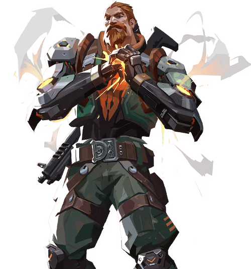

フラクチャーのマップ

情報・特徴
フラクチャーはマップがH型の構造をしており、他のマップとは異なり攻撃側の開始地点が２ヶ所存在しているのが最大の特徴です。
特に侵攻ルートが多い影響で攻撃側は選択肢が多く、防衛側は監視や防衛をしなくてはならないポイントが多いのでラークなど奇襲の危険性が非常に高いマップでもあります。
全体マップ・マップの詳細
フラクチャーのおすすめ構成
フラクチャーはマップ中央に北側と南側を繋ぐジップラインが設置されており、他のマップと比べて侵攻ルートが多い地形をしているのが特徴的です。
強力なカーテンアビリティを持つ「ヴァイパー」は射線妨害だけでなく、デュエリストのエントリーも支援できるため攻守共に重要な役割を担っています。
また、ミッドがほぼ防衛側専用の連絡路となっている影響で時間を掛けると戦力を固められやすいこともあり、迅速にサイト確保を行える「ブリーチ」は非常に相性の良い性能を持っています。
| おすすめチーム構成 | ||||
|---|---|---|---|---|
 ヴァイパー |
 レイズ |
オーメン |
 ブリーチ |
 サイファー |
フラクチャーの基本的な攻め方
Aサイト側の立ち回り
フラクチャーのAサイト側を攻める場合は、ピークやエントリーの起点となるAホール・Aパラボラ・Aロープの3ヶ所を確保することが重要になります。
特にAホールは「Aメインからのラッシュ」や「Aロープからの挟撃」を狙う際に必ず経由する必要がエリアであり、フラッシュやスモークなどのアビリティを活用して迅速に確保することが後々の行動の余裕に繋がるので、Aサイトを侵攻する際はアビリティを惜しまず安全に確保するように意識しておきましょう。
基本的にAホールからAメインにはアビリティによる索敵やピークしている防衛側プレイヤーがほぼ毎回いるので、エリアを確保するためにはフラッシュやスタンを付与できるアビリティで敵をAサイト内に押し込むことが必要があります。
また、Aロープにはヘブンからピークしている敵がいることもありますが、Aメインに比べて頻度が少ない上に複数人が張っていることはほぼないので、スモークでヘヴンの射線を塞ぐことで安全にエリア拡大をすることが可能です。
Bサイト側の立ち回り
フラクチャーのBサイト側を攻める場合は、ピークやエントリーの起点となるBツリー・Bアーケードの2ヶ所を確保することが重要になります。
Aサイトと比べて侵攻ルートが限られているため奇襲や不意打ちを狙うことが非常に難しいのですが、その反面、防衛側がピークもしくは角待ちをするポイントも限られているので、プリエイムや「ブリーチ」のアビリティを活用して一気に押し込むことを意識すると良いでしょう。
BサイトはAサイトと異なり侵攻ルートが限られているため、サイト確保に時間を掛けてしまうとＡサイトの防衛側プレイヤーも合流して突破が困難になってしまいます。
Bサイトに侵攻する場合はアビリティをフル活用して迅速に制圧するか、時間が掛かりそうな状況ならば大人しくAサイトにローテートすると良いでしょう。
フラクチャーの基本的な守り方

Aサイト側の立ち回り
フラクチャーのAサイトを守る場合は、攻撃側のエントリーやピークの起点となるAホール・Aパラボラの2ヶ所を抑えることが重要になります。
特にAホールは侵攻ルートがAメインとAロープに分岐するのでラッシュを仕掛けてくることも多く、抑える際は「ジェット」や「チェンバー」などの即座に離脱できるエージェントを含めた2名以上で警戒しておくのがおすすめです。
Bサイト側の立ち回り
フラクチャーのBサイトを守る場合は、基本的にBアーケードの防衛に注力することが重要になります。
Bサイトの侵攻ルートとしてはBアーケードとBメインの2種類があるものの、Bメインに関しては攻撃側が四方八方から射線を通されることもあって、サイト入り口にスモークを設置しておくだけでも足止めを行うことが可能です。
対して、Bアーケードは突破されてしまうと侵攻ルートがBタワー・Bタワー下部通路・Bメインの3ヶ所になってしまうのでカウンターキルを狙いやすい「ブリーチ」などで警戒するのがおすすめです。